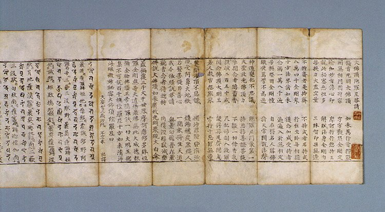
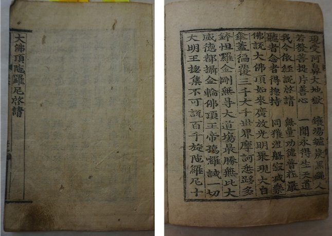
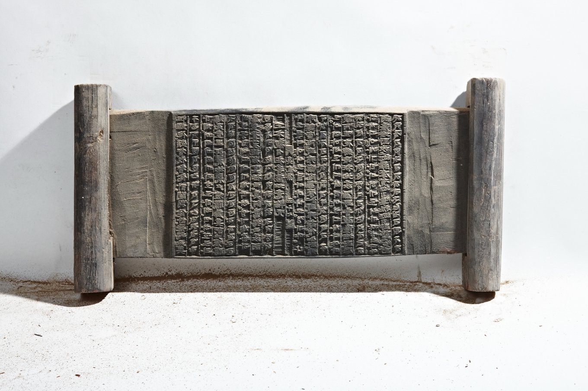

대불정수능엄신주(大佛頂首楞嚴神呪)는 《대불정수능엄경》 제7권에 실린 다라니로, 부처님 정수리에서 솟은 광명 속의 화신(化身) 부처님께서 설하신 신비한 주문입니다. 흔히 줄여서 능엄주(楞嚴呪)라 부르며, 427구에 이르는 긴 다라니로 예로부터 그 영험이 크다 하여 널리 받들어 왔습니다. 대한불교밀인종은 소의경전인 《능엄경》의 이 신주를 천수대비주와 함께 주력(呪力) 수행의 근본으로 삼습니다.
《능엄경》은 아난이 마등가의 주술에 걸려 계를 잃을 뻔한 데서 시작합니다. 그때 부처님께서는 정수리로 광명을 놓으시고 신주를 설하여 문수보살을 보내 아난을 구해 오게 하셨습니다. 그러나 아난은 그 신주의 힘을 입었을 뿐 직접 듣지는 못하였기에, 제7권에 이르러 이 회상의 수행자들과 뒷세상의 중생을 위해 신주를 다시 설해 주시기를 간청합니다.
그러자 부처님의 정수리 육계(肉髻)에서 온갖 보배 빛이 솟고, 그 빛 가운데 천 잎의 보배 연꽃이 피어나 그 위에 화신 부처님이 앉으셨습니다. 화신 부처님의 정수리에서 다시 열 갈래 보배 광명이 뻗어 나가고, 금강역사들이 허공 가득 산을 받치고 금강저를 든 가운데, 볼 수 없는 정수리의 모습[無見頂相]에서 신주가 울려 퍼졌습니다. 그래서 이 주문을 ‘부처님 정수리의 주문’, 곧 대불정(大佛頂)의 신주라 부릅니다.

제7권은 신주를 설하기에 앞서 “마음을 거두어 삼매에 들려면 먼저 네 가지 계율을 얼음과 서리처럼 깨끗이 지녀야 한다”는 말씀으로 시작합니다. 계를 지키면 마음이 바깥 경계에 끌려가지 않으니 마(魔)가 일어날 까닭이 없고, 그래도 지난 생부터 쌓여 온 묵은 습기[宿習]가 녹지 않으면 그때 이 신주를 한마음으로 외우라고 하십니다. 계율로 바탕을 맑히고, 신주로 남은 업의 뿌리를 녹이는 것입니다.
경은 또 도량을 세워 수행하는 법도 일러 줍니다. 먼저 청정한 스승에게 계를 받고, 새 옷을 입고 향을 사르며 신주를 백여덟 번 외운 뒤 도량을 세웁니다. 그리고 탐욕을 끊고 계를 지키며 하루 여섯 때[六時] 도를 닦기를 스무하루[三七日] 동안 이어 가면, 부처님께서 몸을 나투어 정수리를 쓰다듬고 위로하시며 깨달음을 열어 주신다고 하였습니다.
신주를 마치신 뒤 부처님께서는 이 주문이 시방의 모든 부처님을 낳는 근원이라고 하시며 그 공덕을 이렇게 밝히셨습니다.
그리고 이 주문을 외우는 이는 불이 태우지 못하고 물이 빠뜨리지 못하며, 크고 작은 독과 온갖 저주가 해치지 못한다고 하셨습니다. 마음이 어두워 외우지 못하는 이라도 주문을 자작나무 껍질이나 패엽, 종이, 흰 천에 써서 향주머니에 넣어 몸에 지니거나 집에 모셔 두면 평생 어떤 독도 해치지 못한다고 하셨으니, 이 말씀에 따라 예로부터 능엄주를 써서 지니는 풍습이 생겨났습니다.

대불정다라니는 우리나라에서 가장 널리 퍼진 다라니 가운데 하나입니다. 사진의 책은 닥종이에 찍은 목판본으로, 병풍처럼 접었다 펼쳐 볼 수 있는 첩장(帖裝) 형태입니다. 접으면 세로 25.6cm, 가로 8.8cm의 작은 크기여서 늘 몸에 지니고 다니며 외우기에 알맞습니다. 글자가 많이 닳은 것으로 보아 고려 말에 새긴 목판으로 조선 초에 거듭 찍어 낸 것으로 여겨집니다.
능엄주는 고려 시대에 《능엄경》과 함께, 선원의 생활 규범을 정한 《백장청규(百丈淸規)》가 들어오면서 교종과 선종을 가리지 않고 널리 외워졌습니다. 당나라의 백장 선사가 청규에서 이 주문을 외우도록 권한 뒤로, 능엄주는 선원의 일과에 빠지지 않는 주문이 되었습니다.
고려 사람들은 능엄주를 돌에 새겨 세우기도 하였습니다. 이른바 불정다라니당(佛頂陀羅尼幢)으로, 높이 5~7척의 육각 돌기둥에 다라니를 새긴 이 석당들이 평안북도 용천, 황해도 해주, 경기도 개풍 등지에 남아 있어, 능엄주를 향한 고려 사람들의 깊은 신앙을 보여 줍니다.
1485년(성종 16) 인수대비의 명으로 펴낸 《오대진언》에는 신묘장구대다라니와 함께 대불정다라니가 실렸습니다. 범자로 적은 다라니에 한자와 한글로 소리를 달아 누구나 외울 수 있게 한 이 책은 조선 시대 내내 거듭 간행되었고, 그 가운데 대불정다라니 부분만을 따로 엮어 ‘능엄주’라는 이름을 붙인 책도 전합니다.

표지에는 ‘능엄주(楞嚴咒)’라 쓰여 있고, 첫머리에는 다라니를 열어 주시기를 청하는 ‘대불정다라니계청(大佛頂陀羅尼啓請)’이 실려 있습니다. 범자와 한자, 한글을 나란히 쓴 이런 책들은 한글이 만들어진 뒤 진언을 어떻게 소리 내어 읽었는지를 오늘에 전해 주어, 범자와 초기 한글 연구에도 귀한 자료가 됩니다.
조선의 선승들은 저녁마다 능엄주 한 편을 외우는 것을 수행의 기본으로 삼았습니다.

여러 진언을 범어 · 한글 · 한자로 함께 새긴 진언집도 조선 후기에 거듭 판각되었습니다. 1569년(선조 2) 안심사에서 처음 새긴 진언집을 1658년 강원도 신흥사에서 다시 새긴 이 목판은 지금 전하는 것 가운데 가장 오래된 판본으로, 조선 후기에 진언을 외우는 수행이 얼마나 널리 행해졌는지를 보여 줍니다.
오늘날에도 많은 선원의 수행자들이 날마다 능엄주를 한 편씩 외우며 그 전통을 잇고 있습니다. 대한불교밀인종은 《능엄경》의 ‘여래밀인(如來密因)’을 종지로 삼는 종단으로서, 경의 가르침대로 계율을 바탕에 두고 대불정수능엄신주를 외우는 주력 수행으로 선정의 힘을 길러 본래 밝은 참마음을 되찾고자 합니다.